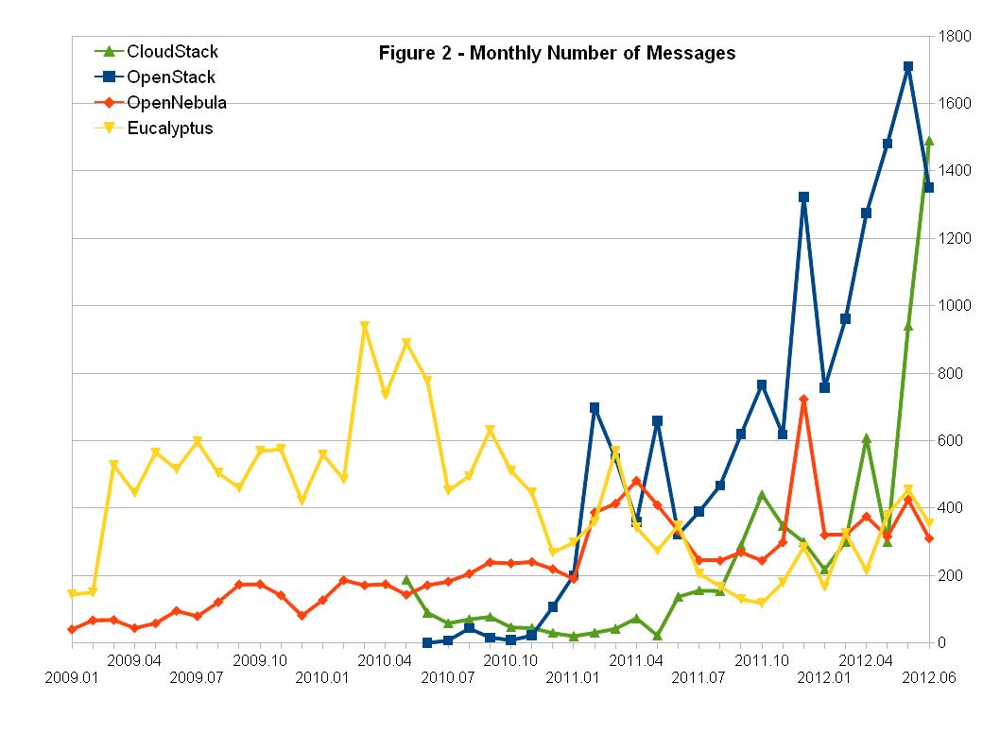

Your browser doesn't support the features required by impress.js, so you are presented with a simplified version of this presentation.
For the best experience please use the latest Chrome, Safari or Firefox browser.
| Foundation | Vendor | "Just a project" | |
|---|---|---|---|
| XtraLarge 1000+ devs 100+ commits/day |
Linux, KDE, Apache, Eclipse, Perl+CPAN, Mozilla+Addons, Gnome, Drupal | ||
| Large 20-200 devs 50-100 commits |
GCC, Python, Samba | MySQL, Qt, OpenOffice, Mono, JBoss, OpenJDK | PHP+PEAR |
| Medium | GIMP | Subversion, GhostScript, Wordpress | phpMyAdmin |
| Missing data | Xorg, GNU system tools |

http://openlife.cc/blogs/2012/july/cloudstack-has-proof-foundations-way-create-foss-community & http://www.qyjohn.net/?p=3801
| Foundation | Vendor | |
|---|---|---|
| Multi-vendor | Linux, Drupal, Eclipse, Hadoop, OpenStack, CloudStack, Wordpress, Node.js | MySQL, MongoDB |
| ~50MUSD | ||
| Single-vendor | Mozilla, Cassandra, Subversion | JBoss, Docker, Meteor, Qt... |
involuntary category
moved to foundation
Mozilla is an exception, 333MUSD revenues
Node.js, Docker, Meteor
BSD/MIT
100-1000s plugin contributors
Node is now a foundation
Docker under pressure
Many more vendors have provided data on their revenues. We now have data to attack the primary question directly!
| Company | Ecosystem | Income (MUSD) | Valuation (MUSD) | Governance | |
|---|---|---|---|---|---|
| Red Hat | Linux | 1500 | 14110 | Foundation | |
| Company | Ecosystem | Income (MUSD) | Valuation (MUSD) | Governance |
|---|---|---|---|---|
| Red Hat | Linux | 1500 | 14110 | Foundation |
| Mozilla | Firefox | 333 | - | Foundation |
| Sourcefire | Snort | 223 | 2700 | Just a project |
| MySQL | MySQL | 100 | 1000 | Vendor |
| Acquia | Drupal | 100 | - | Foundation |
| Cloudera | Hadoop | 100 | 4000 | Foundation |
| HortonWorks | Hadoop | 60 | 1000 | Foundation |
| Pivotal | CloudFoundry | 40 | - | Foundation |
| Multiple vendors | OpenStack | < 1000 | - | Foundation |
| EnterpriseDB | PostgreSQL | ? | - | Foundation |
| Jboss | JBoss | 17 | 350 | Vendor |
| Eucalyptus | Eucalyptus | 10-20? | 50-100M? | Vendor |
| JasperSoft | JasperSoft | 10-20? | - | Vendor |
| H | Toggle this help |
|---|---|
| Space | Forward |
| Right, Down, Page Down | Next slide |
| Left, Up, Page Up | Previous slide |
| P | Open presenter console |